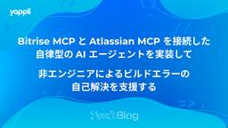

Yappli Tech Blog
https://tech.yappli.io/
株式会社ヤプリの開発メンバーによるブログです。最新の技術情報からチーム・働き方に関するテーマまで、日々の熱い想いを持って発信していきます。
フィード
Claude CodeとNotebookLMを活用して社内ドキュメント検索を改善した
 1
1
Yappli Tech Blog
こんにちは、ヤプリのサーバーサイドグループでマネージャーをしている鬼木です。 社内ドキュメントの検索で「あの情報どこにあったっけ...」と困った経験はありませんか？ 今回は、Claude CodeとNotebookLMを活用して社内のドキュメント検索を劇的に改善した取り組みについてご紹介します。 はじめに：Confluence検索の課題 弊社では社内ドキュメントの管理にAtlassianのConfluenceを活用しています。Confluenceは優れたドキュメント管理ツールですが、実際に使っていると検索機能に課題を感じることがありました。 キーワード検索で欲しい情報がヒットしない 関連する情…
5日前

Bitrise MCP と Atlassian MCP を接続した自律型の AI エージェントを実装して、非エンジニアによるビルドエラーの自己解決を支援する 1
Yappli Tech Blog
こんにちは！ヤプリの iOS グループでテックリードをしている三宅 (@tsushi130) です。 ヤプリでは日々 900 近くのアプリをビルドしています。 そんなビルド作業は「申請チーム」が Build Bot という名前の Slack App を利用して行っていただいており、ほとんどが自動化されています。 ビルドの詳細については少し前ですが、こちらの ↓ iOSDC 2020 での発表にて詳しく解説されているので、気になる方は是非ご覧ください。 fortee.jp 課題 ビルドの仕組みが自動化されているものの、多様なアプリのビルドでは、少しのパラメータが異なっていたり、情報が足りない場合…
5日前
Nuxt + Storybook のバンドルサイズをコントロールする 1
Yappli Tech Blog
こんにちは、フロントエンドグループ EM のこん(@k0n_karin)です。 今回は、@nuxtjs/storybook を使用している際に、バンドルサイズをコントロールする方法についてお話します。 storybook.nuxtjs.org TL;DR pages や plugins などを使わない場合は、別名のディレクトリに一時的に変更してからビルドすると、バンドルサイズを削減できる。.nuxtignoreでもいいし、適当なshellを書いてもいい。 バンドルサイズの劇的ビフォーアフター。24.5MB → 7.4MBに削減。 問題の背景 @nuxtjs/storybook を使うと、pag…
5日前
ダウンタイム発生時にLaravelの長時間実行Jobを安全に制御する手順
Yappli Tech Blog
概要 こんにちは、サーバーサイドエンジニアの佐野きよです。 システムの安定運用のために、データベースのメンテナンスやバージョンアップは欠かせません。しかし、これらの作業には数分から数十分程度のダウンタイムが伴うことがあります。 私たちのシステムでは、Laravelのキューワーカーを利用して非同期処理を実行しています。特に、数十分かかるような長時間実行されるバックグラウンド処理（Job）がデータベースのダウンタイムと重なってしまうと、処理が中断されてデータの不整合を引き起こしたりするリスクがあります。 この記事では、そのような事態を未然に防ぐため、データベースのダウンタイムが発生する際に、Lar…
5日前

業務でClaude CodeをVertex AI経由で使えるようになったので使ってみた
Yappli Tech Blog
サーバーサイドエンジニアの水戸です。 皆さん、Claude Code使ってますか？ 今巷で話題のClaude Codeを弊社でも使えるようになりましたので、使用レポートを書いてみます。 (利用までの過程ではAI委員会のメンバーが動いてくれました！ありがとうございます。) 使えるようになるまで 弊社では、AI活動を推進するにあたり、to-ai-guardiansというSlackチャンネルで各種チェックを受ける必要があります。 セキュリティチーム 法務チーム コーポレートITチーム 以上のチェックを通過し、問題ないものと判断されたツールでないと導入できないということになります。 AI業界は進化のス…
8日前
NuxtでMCPクライアントとMCPサーバーを自作してMCPに入門する
Yappli Tech Blog
はじめに AI委員会メンバー兼フロントエンドチーム EM のこん(@k0n_karin)です！今回はazukiazusa さんの記事で Vercel AI SDK を使った MCP クライアントの実装が紹介されていたので、Nuxt で同じようなものを実装してみました！ 元記事は Next.js で実装されていましたが、普段 Nuxt を使っている身としては「Nuxt でもできるのかな？」と気になったので実際に試してみました。 azukiazusa.dev Vercel AI SDK は@ai-sdk/vue を提供しており、Vue でも使うことができます。 ai-sdk.dev この記事を書く…
9日前
MCPでコーディングエージェントからDBにアクセスできるようにしてみた
Yappli Tech Blog
MCPプロトコルとAWS提供のAurora MySQL/PostgreSQL MCP Serverを使用して、コーディングエージェントから本番相当のデータベースに安全にアクセスできる環境を構築してみた
9日前
INFORMATION_SCHEMA.JOBS_BY_PROJECTを全カラムで定期保存するのが地味に面倒だった話
Yappli Tech Blog
こんにちは！データサイエンス室（以下、DS室）の山本です（@__Y4M4MOTO__）です。 弊社ではBigQueryのINFORMATION_SCHEMA.JOBS_BY_PROJECTビューを独自で保存しています。理由は、JOBS_BY_PROJECTビューに含まれる情報は180日前までの情報しか載っていないからです1。 弊社では「Yappli Analytics」というアプリ運用ダッシュボードをLooker Studioで提供しています。カスタマーサクセス活動の一環でこのYappli Analyticsの利用状況をモニタリングする必要があり、そのために180日より前のJOBS_BY_PR…
24日前
DataOps Night #7に『他チームへ越境したら、生データ提供ソリューションのクエリ費用95%削減へ繋がった話』という題で登壇しました！ #dataopsnight
Yappli Tech Blog
こんにちは！データサイエンス室（以下、DS室）の山本です（@__Y4M4MOTO__）です。 先日5/27(火)に開催された『DataOps Night #7』に表題のタイトルで登壇させていただきました！ finatext.connpass.com この記事では登壇資料やその補足について記します。 登壇資料 登壇内容への補足 結び 登壇資料 speakerdeck.com （NotebookLMによる要約） この資料では、データ基盤の全体像を把握し、他チームと連携して課題を解決したプロセスが紹介されています。特に、データ提供サービスの高額なクエリ費用を、dbtを用いた事前集計化によって大幅に削…
1ヶ月前
プロダクト開発本部LT大会#15を開催しました
Yappli Tech Blog
こんにちは！データエンジニアの山本（ @__Y4M4MOTO__ ）です👋 先日、開発統括本部にて毎Q恒例のLT大会を開催しました🎉（15回目です！） LT大会は、ヤプリに所属するメンバーが、業務や技術情報にとどまらず、個人の趣味や興味をテーマに5分間でプレゼンテーションするイベントです📢 この記事では、当日の雰囲気や印象的だった発表内容をピックアップしてご紹介します！ どんな会？ 発表内容PICK UP! Cursor、お前だったのか。 メモ活用に革命を起こしていたのは 調理法ドリブンで始める自炊 〜「毎食 完全栄養食 健康生活」からの脱却〜 Computer Graphics Introd…
1ヶ月前
プロダクト開発本部でAI委員会を立ち上げました
Yappli Tech Blog
エンジニアリングマネージャーのこん(@k0n_karin)です！ 最近プロダクト開発本部でAI活用の推進を目的としたAI委員会を新たに設立しました。今回は、なぜこの委員会を立ち上げたのか、現在の取り組み、そして今後の展望について紹介していきます。 ヤプリにおけるAI活用の現状 委員会設立の背景として、まずはヤプリで現在どのようにAIを活用しているかをお話しします。全社的に導入しているのは、Google WorkspaceのGeminiです。また、NotebookLMを使った資料の要約や分析、Google Meetの文字起こし機能も重宝されています。これらのツールは特別な申請なしに利用できるため…
1ヶ月前
ヤプリWebフロントエンドの現在地（2025年版）
Yappli Tech Blog
プロダクト開発本部 開発2部 フロントエンドグループ マネージャーのこん(@k0n_karin)です！ 今回はタイトルの通り、ヤプリのWebフロントエンドが現在どんな状態か、どんな課題があるのかなどを整理してみました。本記事を通して、ヤプリのWebフロントエンドに興味を持っていただけたら何よりです。 ヤプリのプロダクト状況 今のチーム規模や開発の体制 YappliのWebフロントエンドの面白さ 大規模な開発と事業の中核となる開発ができる 管理画面とヤプリの営業生産性への影響 動的で複雑なUI・データの実装 約4000万MAUのネイティブアプリのWebViewを使った機能開発 今抱えている課題感…
1ヶ月前
try! Swift Tokyo 2025も最高だった件✨
Yappli Tech Blog
はじめに こんにちは！🌸 ヤプリでiOSエンジニアをしています、白数 (@cychow_app) です！ 今年も4/9 (水) ~ 4/11 (金) の期間で try! Swift Tokyo 2025 が開催され、3日間参加してきました。 try! Swift Tokyoへの参加は今回が2回目となり、昨年のtry! Swift Tokyo 2024は渋谷で開催されていたのですが、今年は会場が立川に移動し、会場の規模も大きくなっていました！ 会場がデカい.....!? 今年のtry! Swift Tokyo 2025でも、世界で活躍されている著名な方々が登壇されており、すべてのセッションが非常…
2ヶ月前
今年はさらにパワーアップ、try! Swift Tokyo 2025 の参加レポート
Yappli Tech Blog
はじめに iOS エンジニアの 菅（@Nao_RandD | ナオランド）です。 先週、try! Swift Tokyo 2025に現地参加してきました。 現地での参加は2回目です。 去年からさらにパワーアップしていた魅力と、セッションの感想についてご紹介できればと思います。 Riko ちゃんがお出迎え はじめに 概要 開催概要 try! Swiftの特徴 新しい魅力３選 Flittoによるリアルタイム翻訳 新たな会場！立川ステージガーデン 爆速のアーカイブ公開 セッション紹介 作って学ぶ正規表現 -やさしいSwift Regex入門-（kishikawa katsumi） セッション概要 主…
3ヶ月前
BigQueryで複数プロジェクトのテーブル参照状況をINFORMATION_SCHEMAから調べてLooker Studioでダッシュボード化してみた
Yappli Tech Blog
こんにちは！データサイエンス室（以下、DS室）の山本です（@__Y4M4MOTO__）です。 BigQueryにおいて複数のGoogle Cloudプロジェクト（以下、GCプロジェクト）に存在するテーブルの参照状況をINFORMATION_SCHEMAから調査し、Looker Studioでダッシュボード化してみたので、その内容を記載します。 背景 方法 STEP 1｜TABLESビューからのテーブル一覧作成 STEP 2｜JOBSビューとの結合による参照状況の集計 どのテーブルが何回参照されてるかのマスタ（information_schema_jobs_referenced_tables） …
3ヶ月前
JaSST '25 Tokyo に今年も行ってみた
Yappli Tech Blog
はじめに JaSSTとは 当日の様子 参加メンバーから 日沢 Agile TPIを活用した品質改善事例 Agile TPIとは 感じたこと 山口 「保証するための品質基準」がQAには必要か？ 現場からお届けします 〜モバイルアプリテストにおける工夫と挑戦〜 今西 "E2Eテスト自動化の目的を常に考えて軌道修正すること"について "QAに求められている品質基準を十分に理解すること"について 最後に PR はじめに ヤプリQAの日沢です。 去年の続き、今年もヤプリQAたちがJaSST '25 Tokyoに行ってきました！ ちなみに去年のブログはこちらです。 JaSST24 Tokyoに参加しました…
3ヶ月前
特定のメソッド内で特定のメソッドを呼んでいるかチェックするPHPStanのカスタムルールを作成する方法
Yappli Tech Blog
はじめに カスタムルールを作成した背景 作成したカスタムルール 補足 一旦変数に入れられるケース インスタンス化直後にメソッドチェーンされないケース カスタムルールのテスト MustCallExpireAfterRuleTest.php NoMissingExpireAfter.php MethodCallWithoutOverlapping.php MissingExpireAfter.php まとめ さいごに はじめに こんにちは。サーバーサイドエンジニアの佐野きよ（@Kiyo_Karl2）です。 今回とある理由で、特定のメソッド内で特定のメソッドを呼んでいるかチェックするPHPStanの…
3ヶ月前
新卒SREとしてヤプリで1年間働いてみて
Yappli Tech Blog
はじめに はじめまして、ヤプリの眞田です。 私は2024年4月に新卒SREとしてヤプリに入社しました。 本日は2025年3月31日で入社から1年が経過したことを記念して、私の新卒SREとしての1年間を振り返りたいと思います。 はじめに なぜ新卒SREとしてキャリアを選んだのか 入社前の期待と実務経験から得た認識 1年間で担当したプロジェクト・業務 初めて任された仕事とその成果 (2Q) 改善に取り組んだこと （3Q, 4Q, 2025年1Q）（インフラ最適化、自動化、監視強化など） 特に苦労したこと・その乗り越え方 ヤプリSREならではのやりがいや醍醐味 今後の目標 おわりに なぜ新卒SREと…
3ヶ月前
LaravelのSanctumで一部のアクセスで401エラーが発生してしまった原因と対処法
Yappli Tech Blog
はじめに 事象 原因 レプリケーション遅延による影響だった stickyオプションは同一リクエスト上でしか有効にならない 対処方法 類似ケース まとめ さいごに はじめに こんにちは。サーバーサイドエンジニアの佐野きよ（@Kiyo_Karl2）です。 ヤプリの一部のサービスでは、APIトークン（BearerToken）を使った認証処理にSanctumを利用しています。 この認証処理において、一部のアクセスで401エラーが発生するという事象に遭遇したため、その原因と対処方法について紹介いたします。 事象 調査したところ、具体的には以下のような事象であることがわかりました。 アクセストークン発行A…
3ヶ月前
フラーさんと開発統括本部LT大会でワイワイした話
Yappli Tech Blog
こんにちは！データサイエンス室の山本（ @__Y4M4MOTO__ ）です。 開発統括本部では四半期ごとにLT大会を開催しています。今回はなんと、昨年にヤプリと資本業務提供したフラー株式会社（以下、「フラーさん」）のエンジニアの方々をお招きして一緒にワイワイしました！ この記事ではその様子をご紹介します！ どんな会？ LT大会（Lightning Talk大会）は、 一人約5分で自由なテーマに基づいて発表していくイベント です。ヤプリの開発統括本部では、以下のルールで開催しています： 任意参加 📝 ... どの部署からでも自由に参加できます。 発表時間は5分 ⏰ ... コンパクトに話すのがル…
4ヶ月前
モバイルアプリエンジニアを志望する学生さん、ヤプリを体験してみてください！
Yappli Tech Blog
こんにちは！ヤプリでAndroidエンジニアとして１ヶ月インターンに参加させていただきました、寺澤といいます☺️ 短い期間でしたが、ヤプリでのインターンを経験して感じたことを素直に書いていこうと思います！ 目次 Yappliについて インターンで取り組んだこと アプリ研修 遊撃チームで改善チケットの対応 社内アプリのネイティブ化 社員の方との1on1 アプリエンジニア志望の学生にヤプリを体験してほしい 多くのユーザーにアプリを届けられるというやりがい 汎用性という複雑さへの挑戦 さいごに Yappliについて Yappliは、プログラミング不要でネイティブアプリを開発・運用できる ノーコード型…
4ヶ月前
ヤプリに入社〜1年くらいでやったことを振り返ってみた
Yappli Tech Blog
こんにちは、Androidエンジニアの伊藤です😆 2024年の4月にヤプリに中途で入社し、現在（2025/02/19）で10ヶ月半が経ち、いろいろな経験を積ませてもらいました。 最初は新しい環境に不安もありましたが、人間関係に関してヤプリは懇親会やミーティングの場でみんなが気負わずフランクに話せる雰囲気があり、すぐに打ち解けられたのが印象的でした。 また、個人の裁量が尊重されつつもチーム間でのサポートが手厚く、常に新しい機能や修正が素早く取り込まれていくスピード感に毎回驚かされています！ さて、今回は入社から現在までのざっくりとしたスケジュールと、特に印象に残ったエピソードを通して、ヤプリでの…
4ヶ月前
アプリ起動時に叩かれるAPIを再構築（リプレイス）した話
Yappli Tech Blog
はじめに リプレイスの背景 リプレイス方法 設計 既存のAPIを読み解く APIの責務を決める アプリ起動時の設定取得用の汎用的なAPI 機能やレイアウト情報取得API レスポンス内容を決める 決めた内容について、周りに共有して合意をとる 実装 まずintegration testを実装する 処理のまとまりごとに細かくPRを出す キャッシュ戦略を考える 結果 よかったこと 難しかったこと 最後に はじめに こんにちは、サーバーサイドエンジニアの中川（@tkdev0728）です。 本記事を書いているのが2月なのですが、絶賛足先が冷える点に悩んでいます。冷え性改善のおすすめグッズがあればぜひコメン…
5ヶ月前
#みん強 に『プロダクト観点で考えるデータ基盤の育成戦略』という題で登壇しました！
Yappli Tech Blog
こんにちは！データサイエンス室（以下、DS室）の山本です（@__Y4M4MOTO__）です。 先日1/30(木)に開催された「みんなの考えた最強のデータアーキテクチャ〜2025もやってきましょうSP！」に表題のタイトルで登壇させていただきました！ datatech-jp.connpass.com この記事では、登壇してみてのレポートを記していきます。 各種資料 私の登壇資料 配信アーカイブ Xポストまとめ みん強に応募しようと思ったきっかけ 資料を作成してみての感想 登壇してみての感想 おまけ: 地味な個人的WIN まとめ 各種資料 私の登壇資料 speakerdeck.com 配信アーカイブ…
5ヶ月前
macOSからAmazon LinuxにGoアプリケーションをクロスコンパイル
Yappli Tech Blog
はじめに サーバーサイドエンジニアの加納です！ 皆さんは普段からGoを利用して色々なアプリケーションを作成していますか？ 自分は、Goが好きなのでよくGoで色々なアプリケーションを実装しています！ 今回は、macOSの開発環境からAmazon Linux向けにGo CGOアプリケーションをクロスコンパイルする実装について解説します。具体的には、go-sqlite3とMySQLを利用するバッチアプリケーションを例に、クロスコンパイルの実装方法と直面した課題について共有します。 背景と課題 今回実行したbatchでは以下の要件がありました： go-sqlite3を使用したローカルデータの操作 My…
5ヶ月前
【カンファレンス初参加】SRE Kaigi 2025 参加レポート
Yappli Tech Blog
はじめに はじめまして、ヤプリで新卒SREをしています。眞田です。 今回はSRE Kaigi 2025に参加したので、個人的に面白かったセッションについて話します。 自分自身、そもそもこういったテックカンファレンスに初参加ということもあり、とても緊張していました。 しかし終わってみればとても楽しい経験をさせていただき、執筆中の今でもまだ余韻が残っています。 このような体験を他の方々にもしてほしいという気持ちから本ブログを書いています。 最後には参加してみての感想も書いてますので、お時間ある方はご一読いただけると嬉しいです。 面白かった・興味のある内容だったセッション たくさんの面白いセッション…
5ヶ月前
生成AIコードレビューの導入から見えてきた効果と課題
Yappli Tech Blog
この記事では、ヤプリでなぜ・どのように生成AIコードレビューを導入したのかを紹介し、導入後のアンケート結果から見えてきた成果や課題もお伝えしていきます。
5ヶ月前
Translation APIとAccessibility APIを使ってSlackやDiscordのメッセージを自動翻訳する
Yappli Tech Blog
iOS 18とmacOS Sequoiaでは新しくTranslation APIが利用できるようになりました。それなりの品質の翻訳APIが無料で使い放題というのは非常にお得で、おそらく代替になるものは他に存在しません。ですので活用できるところがあれば積極的に使っていくといいでしょう。 今回はこのTranslation APIとAccessibility APIを組み合わせて、SlackやDiscordのメッセージを自動的に翻訳するアプリケーションを作成したので、その内容をご紹介します。 OSSライブラリのコミュニティなど外国語が主に使われるサーバーの話題を追いかけるのに便利です。Botではなく…
6ヶ月前
Ink APIさわってみた
Yappli Tech Blog
こんにちは、Androidグループに所属しているにゃふんた（nyafunta9858）です。 今回は、なかなか試せていなかったAndroidXの新しいライブラリを弊社のYappdateDayを使って触ってみましたので、そちらについてお話してみたいと思います。 YappdateDayについて 今回試したライブラリ 手書き入力を試す、その前に 環境構築 実際に手書き入力を試してみた 1. 手書き入力を受け付けるViewのセットアップ 2. MotionEvent.ACTION_DOWN受信後、手書き入力の開始をAPIへ通知 3. MotionEvent.ACTION_MOVE受信後、手書き入力の更…
6ヶ月前
SSL証明書をTrust Storeに登録し、HTTPS通信における証明書の正当性検証について学ぶ
Yappli Tech Blog
こんにちは、サーバーサイドグループのマネージャーの鬼木です。 今回、直近でSSL証明書を取り扱うタスクを担当し、HTTPS通信について学びになることが多かったのでその知見共有の記事になります。 SSLの仕組み 本題に入る前に簡単にSSLの仕組みについて説明したいと思います。 HTTPS通信をする際、TLSプロトコルを用いてクライアント・サーバー間で通信を行います。HTTPS通信はHTTP通信に比べて暗号化通信ができることが特長ですが、暗号化通信成立までにいくつかの工程を挟みます。 その中でクライアント側は通信するサーバーの正当性検証を行います。 正当性検証 サーバー側はHTTPS通信を行うにあ…
6ヶ月前